- Overview
- Assigning Process Permissions
- Viewing the Permissions of a Process
- Accessing Cases with Process Permissions
- Accessing DynaForms
- Accessing Input Documents
- Accessing Output Documents
- Accessing Message History
- Accessing Case Notes
- Accessing the Summary Form
- Accessing the Change Log
- Process Permissions Example
Overview
By default, only assigned users can work on cases and gain access to their objects, but Process Permissions can be used to grant a User(s) or Group(s) read-only access to the objects in cases, which include (Dynaforms, Input Documents and Output Documents, Case Notes, Summary Form and Message History). Only the user currently designated to work on a case can open the case. To allow other users the ability to see (but not change) the data in cases, they need to be assigned Process Permissions to the process and its objects. Process Permissions are designed to offer advanced control over how users access cases and what information they can view in specified tasks during the case.
Note: If users need to have write access to cases, see Process Supervisor.
Assigning Process Permissions
Assign Process Permissions to a User(s) or Group(s) by going to the DESIGNER tab and opening a process. Then, hover the pointer of the mouse over the (+) icon next to the Permissions option. Click on the Create button.

A new modal window with the options to create a new permission for the process will be shown.
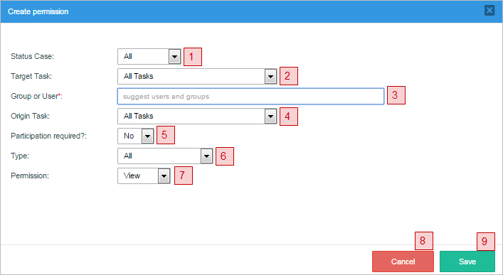
Where:
- Status Case: Select the status the case must currently have in order to allow the user/group to access it. The options shown are the following:
- All: Gives the user(s) or group(s) access to all cases, no matter which status they have.
- Draft: Gives the user(s) or group(s) permission to access cases with DRAFT status. It means that the current task of the case has started to be worked on (a step has been opened and saved), but the current task hasn't yet been completed.
- To Do: Gives the user(s) or group(s) permission to access cases with TO_DO status. It means that the current task of the case has been assigned to a user, but that task hasn't been worked on yet (for example, no steps have been saved yet).
- Paused: Gives the user(s) or group(s) permission to access cases that have been paused.
- Completed: Gives the user(s) or group(s) permission to access cases with COMPLETED status. It means that the case has arrived at an End Event and wasn't closed by canceling or deleting the case.
- Target Task: Select the task where the case must currently be in the process in order to access the case. If the case is currently in any other tasks, then the selected user/group will not be able to open the case. For example: If the "Review Form" task has been configured as the target task, the selected process elements will only be accessible when the process reaches this specific task. To give access no matter what the current task is, then select the All Tasks option.
- Group or User: Enter the name of the user or user group that will have the permission in the process. When there is a large amount of Users/Groups, this field has a suggest property where a letter or a name can be typed and the field will show the exact User/Group. This is a required field.
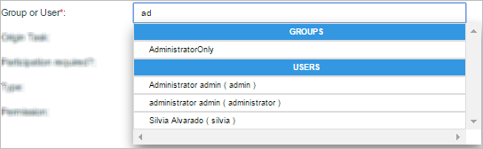
- Origin Task: Select the task whose objects will be seen. The selected user/group will only be able to see objects from this task. For example: If the "Send Form" task has been selected as the origin task, the selected process elements will only be accessible if they are currently assigned as steps of this specific task. To allow the user/group to see objects from all tasks, choose the All Tasks option.
- Participation Required?: Select Yes if the user must have been previously designated to work on the case at some prior point in order to have permission to access the case. Select No if the user doesn't need to have been designated to work on the case in order to open it. Note that selecting Yes means that the user will only have Process Permissions to open the case after they have worked on the case, and not through the whole process.
- Type: Select the types of objects that the user or group will be given access to. They can be a:
- Dynaform
- Input Document
- Output Document
- Case Notes
- Message History
- Summary Forms (only available in the Enterprise Edition)
- Permission: Select one of the options:
- View: This option allows the user or group to open the case and view its object(s).
- Block: This option prevents the user or group from opening the case and viewing its objects.
- Delete: This option is only available if the user selects "Type" as "Input Document" or "Output Document". It allows the user to delete document(s) that are assigned as a task's step.
- Cancel button: Click on this button to cancel the creation of the new permission.
- Save button: After setting all the necessary conditions to create the permission, click on this button to save it.
Take into account that multiple Process Permissions can be used in combination when needing to block a small subset of users or block access to a small subset of objects. First, create a general permission with the VIEW option. Then, create more specific permissions that BLOCK access to that smaller subset. Read this section to learn more.
Viewing the Permissions of a Process
View the permissions of the process by going to the Permissions option.
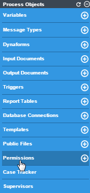
The modal window that appears will show a list of all permissions given in the process.
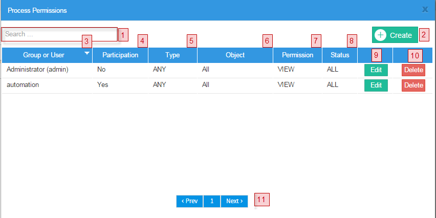
- Search: Enter the name of the user or group that has the permission in this field. It has the auto complete property so all matches will be listed while entering the text.
- Create: Click on this button to create a new permission. The modal window that opens is explained above.
- Group or user: This column lists the group or user who has been given the permission. Note that the list can be re sorted in alphabetical order by clicking on one of the headers of a column. Click again to switch the sort order from ascending to descending or vice versa.
- Participation: Shows whether the participation of the user in the case is required or not, in order to view the case.
- Type: Shows the type of objects (DynaForms, Input Documents, Output Documents, Cases Notes, Message History or All), to which the user has access.
- Object: Shows the specific object(s) that the user may access, depending on the selected type.
- Permission: Shows the type of permission, which may be "view", "block" or "delete".
- Status: Shows the status (ALL, TO_DO, DRAFT or COMPLETED) the case must have for the user or group access to it.
- Edit: Click to edit the settings of the permission.
- Delete: Click on this button and a delete confirmation dialog will be displayed.
- Pagination control: Use this control to navigate through the pages of permissions, which are displayed ten at a time.
Using the BLOCK Permission
The BLOCK permission is used in combination with a VIEW permission. Use the VIEW permission to create a general class to access an object, then create additional BLOCK permissions to remove specific users or objects from that general class.
For example, if it is necessary for all users in a group named "Employees" to have access to a DynaForm except user jane_doe, then first create a VIEW permission for the Employees group to access the DynaForm. Then, create a second BLOCK permission to prevent user jane_doe from accessing the DynaForm.
BLOCK permissions can also be used to remove objects from a general class. For example, to give users access to all the objects in a case except the final Output Document, which contains sensitive information, then first create a VIEW permission with Type set to "All". Then create a second BLOCK permission with Type set to "Output Document" and select the particular Output Document to block.
How Permissions are Calculated
Take into consideration that when a user is assigned to more than one permission, VIEW Permissions are added together. In contrast, BLOCK permissions are subtracted.
For example, if a user has been assigned the following list of permissions rules:
- Permission Rule 1 VIEW (Positive)
- Permission Rule 2 VIEW (Positive)
- Permission Rule 3 BLOCK (Negative)
- Permission Rule 4 VIEW (Positive)
- Permission Rule 5 BLOCK (Negative)
The final process permissions will be calculated in this way:
Positive (VIEW) permissions are added (OR):
And negative (BLOCK) permissions will be subtracted (AND):
The resulting permissions will be calculated like:
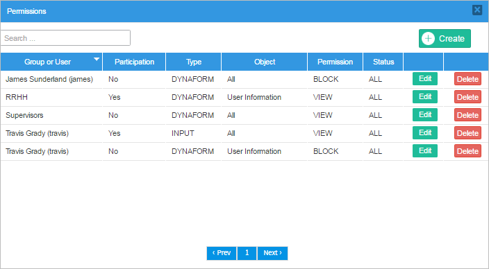
Accessing Cases with Process Permissions
After process permissions have been assigned to users or groups, they can obtain read-only access to the cases by going to the HOME tab. The cases can be found and opened using one of the following options:
If the user isn't assigned to the case and hasn't participated in the case, then the only way to access the case is to find it with advanced search, which is only available to users who have the PM_ALLCASES permission in their role.
Accessing DynaForms
View DynaForm(s) with process permissions by going to HOME and opening a case. Then, go to the Information submenu and select the DynaForms option. To see a list of available DynaForms to which the user has access:
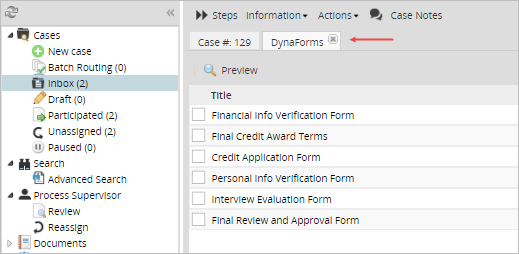
To view a particular DynaForm, first select it in the list, then click on the Preview option in the toolbar to see the current read-only version of the DynaForm.
Preview
Select a Dynaform and the preview of what was filled in during the case will be displayed in view mode:

Accessing Input Documents
View Input Documents with process permissions by going to HOME and opening a case. Then go to the Information submenu and select the Uploaded Documents option to see a list of available input document files.
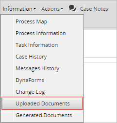
To view the file, first select it in the list and then click on the Download option of the toolbar. The configuration of your web browser will determine how the file is opened or saved.

Deleting Input Documents
A Delete Process Permission allows the user to delete input documents that are assigned as a task's step.

To delete an input document, create a process permission and set the Type as "Input Document" and the Permission field as "Delete", as shown in the image below:
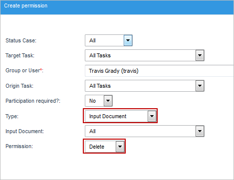
Then, go to HOME and open the case. Go to the "Steps" button and select the input document in the list of steps.
Note: Remember that only users who are assigned to the case or are Process Supervisors have access to the Steps button, so unassigned users who need to delete input document files should also be assigned as Process Supervisors and given access to the input document object. These users need to have the PM_SUPERVISOR permission in their role.

The "Delete" button will be available in the documents defined in the "Object" field of the permission. By clicking on it, the following confirmation message will be displayed.

Finally, click on "OK" to delete the file or click on "Cancel" to close the message.
Accessing Output Documents
To view Output Documents through process permissions, go to HOME and open a case. Then go to the Information submenu and select the Generated Documents option to display a list of available output document files. To download one, first select a file and the Download (for both .doc and .pdf formats) buttons will be enabled, depending on which types of files are generated by the output document. Click on any of them to begin the download. The configuration of your web browser will determine how the file is opened or saved.

If accessing an Output Document with the Delete permission, then under the Information > Generated Documents, the output document files will be listed with the Delete button on the right-hand side.
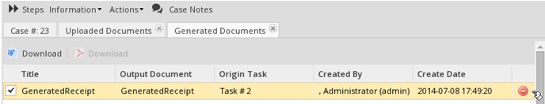
Accessing Message History
This permission restricts the ability to re-send emails in the case. By default, users don't have the permission to resend messages; if you want to add a permission for users to resend them, open Process Permission and on Type select Message History.
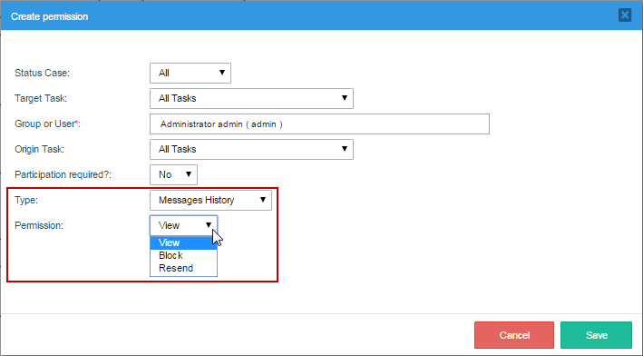
A user or a group of users, depending on how the permission was set, will have access to resend messages and then preview them. Type of permissions are:
- View: Users will only have permission to view the message sent inside the Message History.
- Block: Users won't have any notifications listed inside the Message History.
- Resend: Users will only have the resend permission available.
Accessing Case Notes
Only users assigned the correct process permission can access case notes. A user who has been given that permission can both view and post case notes.
To access case notes, go to HOME and select the option to view a list of cases. The notes for a particular case can be accessed by clicking on its icon. They can also be accessed by opening a case and clicking on the Case Notes button in the toolbar.
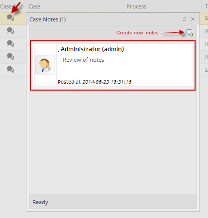
Accessing the Summary Form
Note: Only available in the Enterprise Edition.
By default, users do not have access to the Case Summary DynaForm. Therefore, if a user who hasn't been granted the Summary Form Permission tries to access a case summary that uses a custom DynaForm, the following message will display:
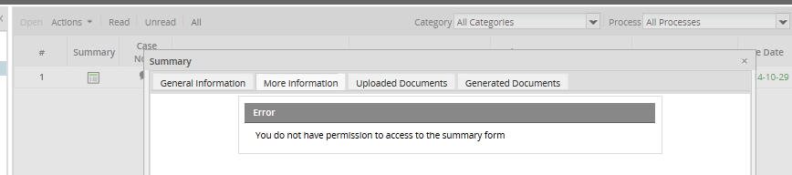
To grant the Summary Form Permission to users or groups, open a project for editing and create a new permission. In the Type field, select the Summary Form option. Also define the other properties of the process permission.
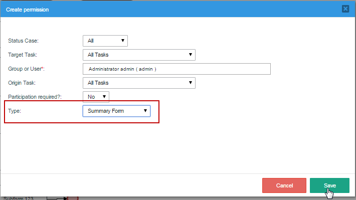
Once a user has been granted the Summary Form permission, the custom DynaForm for the case summary can be displayed:
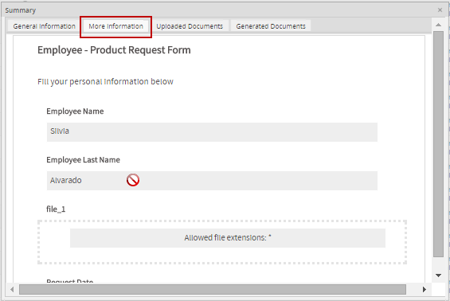
Accessing the Change Log
The Change Log section displays the changes of the variables' values after each step of each task in the process. This includes all modified variables and unmodified of each step, including before and after triggers.
Data Changes
The Change Log functionality registers the variable value changes after each step. For example, if a task only has one step:
Therefore, if the task has two steps, then the log will register the changes twice:
Note: Modifications made by Supervisor Users will be reflected in the change log.
Permissions and Access
All variables modified in each step (including before and after triggers) are displayed in the Change Log section only if the user has permission.
Note: Users who do not participate in the tasks defined in the permission need the PM_ALLCASES permission to search the case through the Advanced Search option and have access to the Change Log option.
To allow users to access the change log in a specific task(s), create a process permission with the type "Dynaform" and assign the users using the Group or User field. An example of permission is shown below:.

Access the change log by going to HOME and opening a case. Then, go to the Information submenu and select the "Change Log" option.
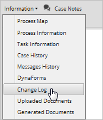
A new tab will be displayed with the content of the variables, as well as their values and changes through each step, as shown in the image below:
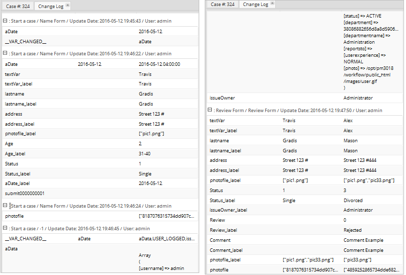
The change log will specify the following:
-
- Field Name: Name of the field that was modified. Usually the name that is displayed is the name given when the field was created.
- Previous Values: If changes were made, the previous values will be displayed in this field.
- Current Values: Displays all the fields and their modified values.
Process Permissions Example
The process in this example will be the following:
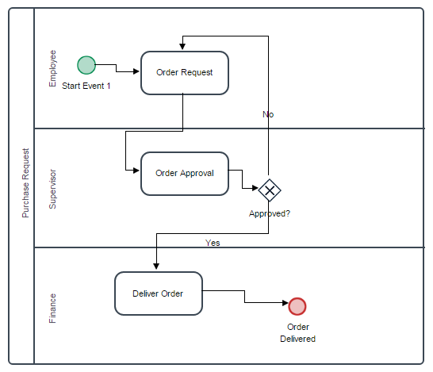
For this example a user must be created. Go to Admin and in the Users tab, click on "New". This will lead to another window where personal information about the new user must be filled in. As seen in the image below, only the required fields were filled in for the purpose of this example. The new user will be "Fernando Vargas" and he will have the role of "Operator", which will have the PM_ALLCASES permission). Give a password to the new user and then click on "Save" to store their information. Create as many users as needed for each task that is required for the process.
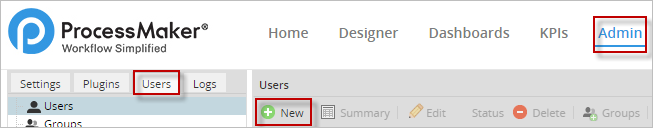
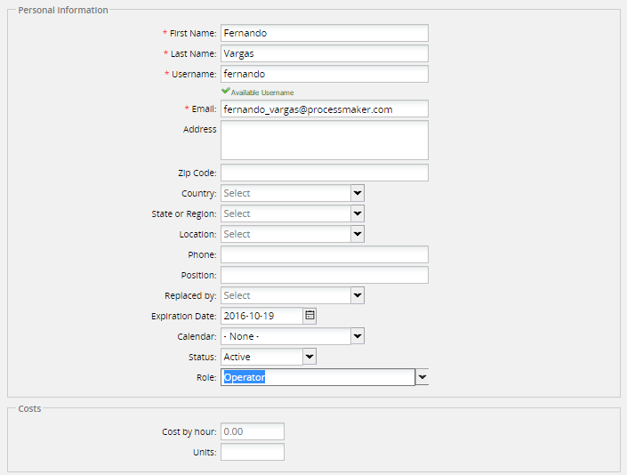
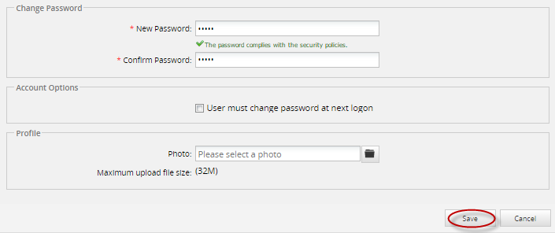
After created the new user(s), go to the Designer tab and enter the process being worked on. In the main toolbox go to "Permissions" and create a new permission. In the image below, the new window that opens will have fields for the user to consider before giving permission to a user or a group of users.
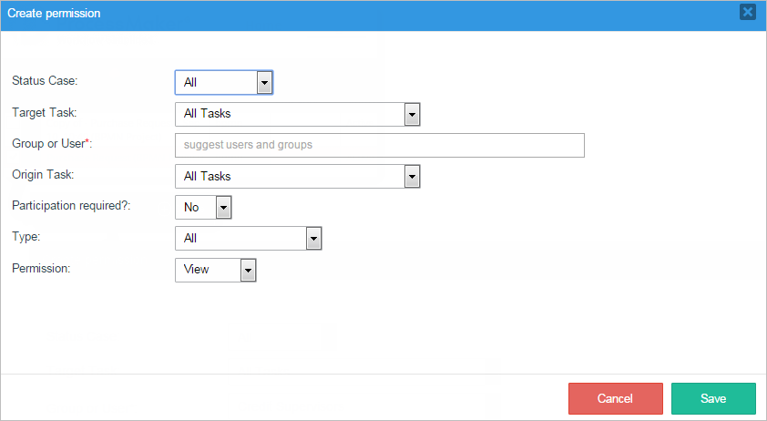
To show how to use permissions in a task, take the picture below as an example. Where the "Employee" and the "Supervisor" have two different tasks to do.
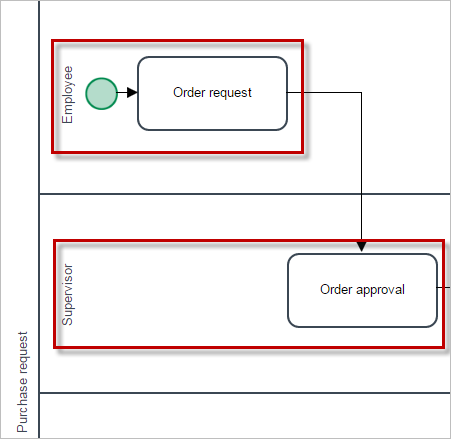
Once in permissions, the first field is Status Case. This is the status the process must be on. In this example, the case has not been started yet, so the Status Case needs to be on "TO DO".
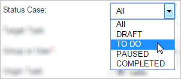
The next step is to choose the Target Task. Here the user must select a task where the case is. In this example the task is "Deliver Order".
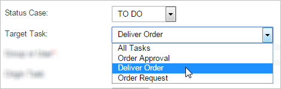
Next, the users who will be given access to cases in the current process will be chosen in the Group or User field. Here we can find the user created earlier: "Fernando Vargas", the person in charge of the task. To select him, write an "f" in the suggest box and all users or groups that start with the letter "f" will be suggested.
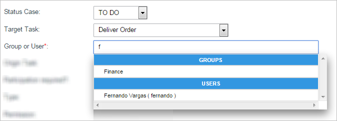
The Origin Task field selects the task in which objects will be seen by the selected user or group chosen before.
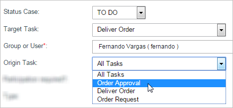
After the origin task, the Participation Required? field is next. In this case we'll choose "Yes" because the user must have been previously designated to work on this case at some prior point, so he needs the permission to be able to continue.
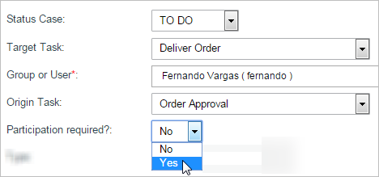
In the Type field, select the type of object that the user or group will be given access to see. In this case Fernando Vargas needs to see a Dynaform. The next field will appear and become available after choosing the type of object. If "Dynaform" was chosen, then all DynaFoms available will appear in the next dropdown.
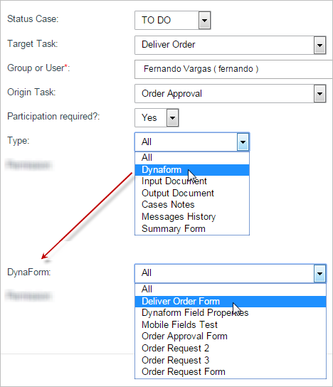
The last field will determine the permit that the user has in the task. In the example, the View permission was chosen because it will allow access to the case and its objects. Click on "Save" to maintain all changes.
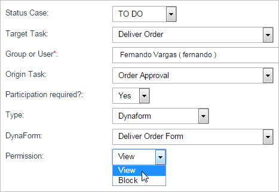
After saving, the permissions created are in the Permissions window, including a new option for exemplification.
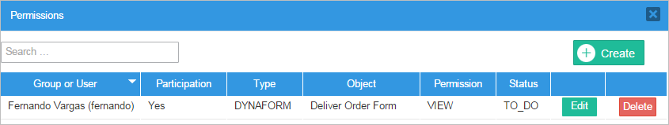
To make sure the permissions work, go to Home, then New Case in the left menu, and choose the case that was given the permissions created. In the Information tab, choose "Dynaforms" and the other information that needs to be seen from the case. Here, all the work being done on the process will be shown.